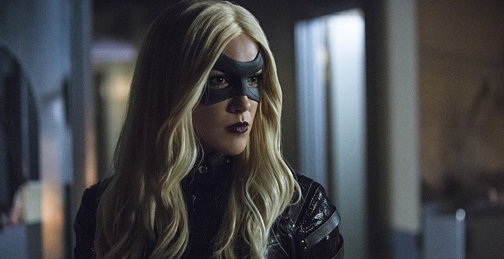

Roy Harper, is a street-savvy young man from the Glades. He is the son of the
late Roy Harper, Sr. and Mrs. Harper, the boyfriend of Thea Queen, a good friend of
Sin, a good friend and the current protégé of Oliver Queen, and the former protégé
and friend of the late Sara Lance. Roy was injected with the Mirakuru, becoming a
human weapon gaining a variety of powers including super-strength, endurance and
rapid cell regeneration. He was later cured by a counter-serum developed by S.T.A.R.
Labs. He became Oliver's sidekick and vigilante partner with the codename Arsenal up
until the point where he masqueraded as The Arrow and faked his death. Having no
choice, Roy left the team and Starling City to begin a new life under the name
Jason; whether he will maintain this name since leaving his job as a mechanic is
unknown.
taken from "http://arrow.wikia.com/wiki/Roy_Harper"
Laurel Lance/Black Canary
 Dinah Laurel Lance, known as simply Laurel Lance, is a former legal aid attorney,
as well as a current assistant district attorney working under an unnamed
District Attorney. Laurel is the daughter of Dinah and Quentin Lance, the older
sister of the late Sara Lance, the ex-girlfriend, the close friend and on/off
love interest of Oliver Queen, the ex-girlfriend and the close friend of the
late Tommy Merlyn, and the best friend of fellow lawyer Joanna de la Vega.
After the death of her sister Sara, Laurel received training in combat from Ted
Grant and became a vigilante, joining Team Arrow. In the field, she operates
under the codename Black Canary. She has been referred to by the media as the
Woman in black. She was being trained by Nyssa al Ghul; until the latter was
captured by Oliver (who is actually going undercover), Maseo Yamashiro and a
team of assassins to bring Nyssa back to Nanda Parbat by force.
taken from "http://arrow.wikia.com/wiki/Laurel_Lance"